Світло
Від м'якого розсіяного до повного затемнення — ви керуєте ранком.
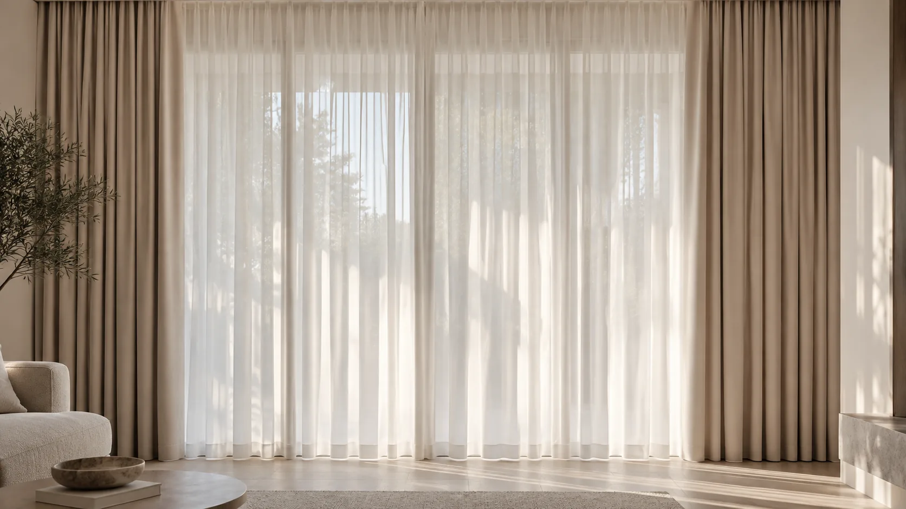
Штори, які
змінюють кімнату
Дизайнер приїде зі зразками в межах Києва, підбере тканину у вашому освітленні та супроводить проєкт до монтажу.
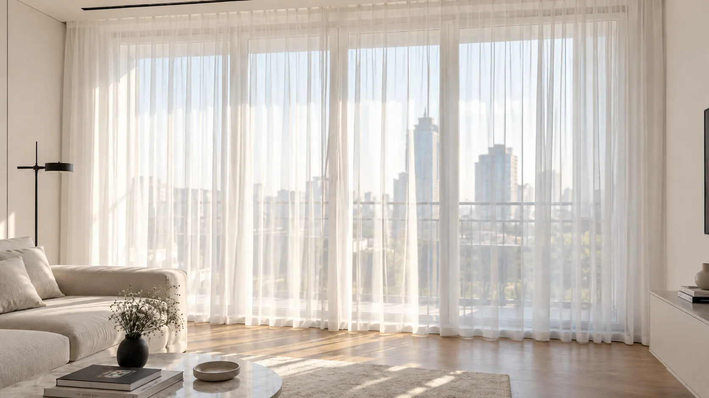
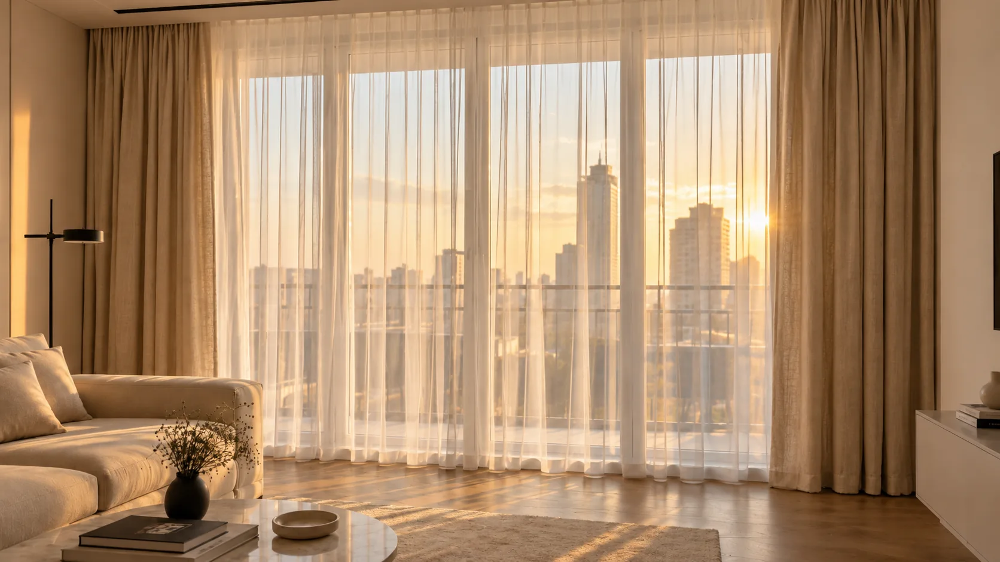


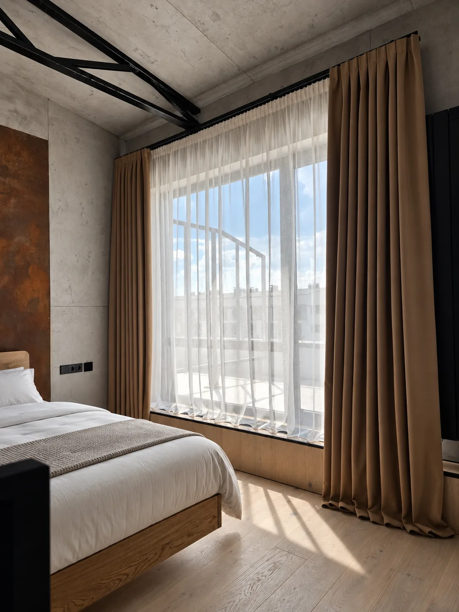
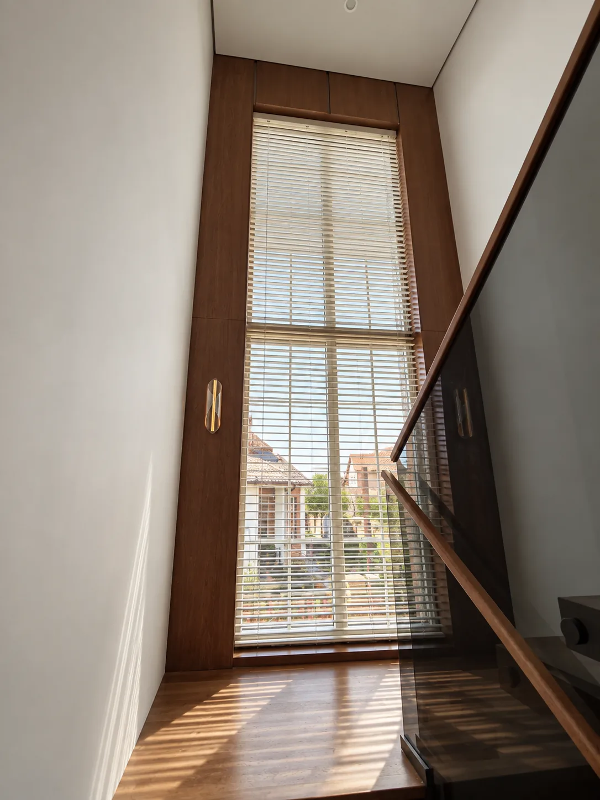
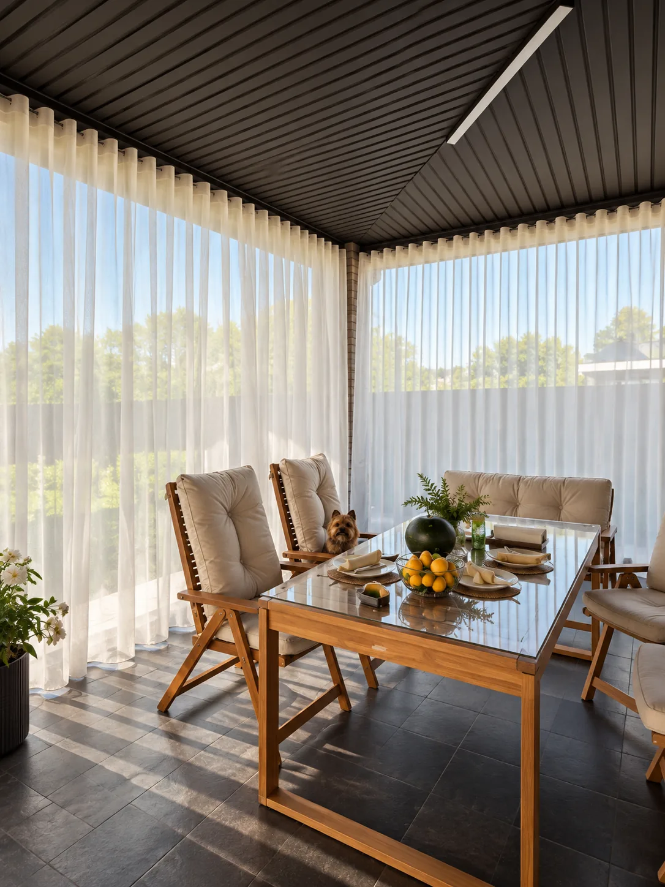
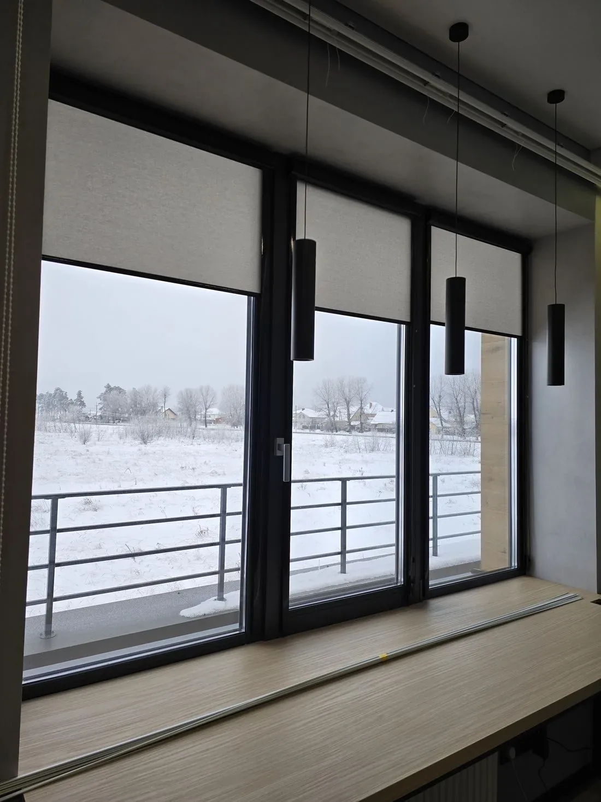
Дизайнер привезе відрізи додому: при вашому світлі тканина виглядає інакше, ніж у каталозі.
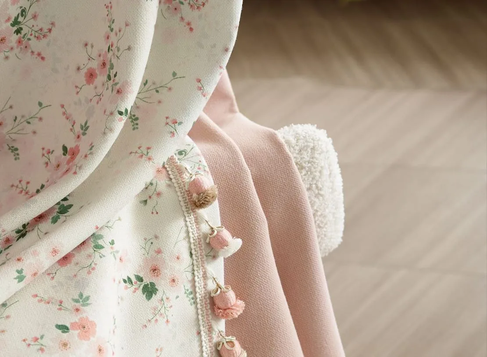
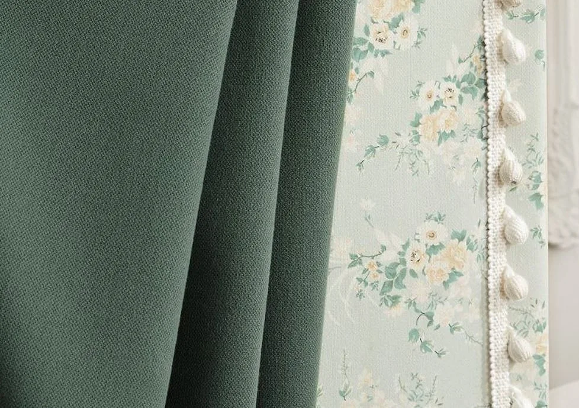

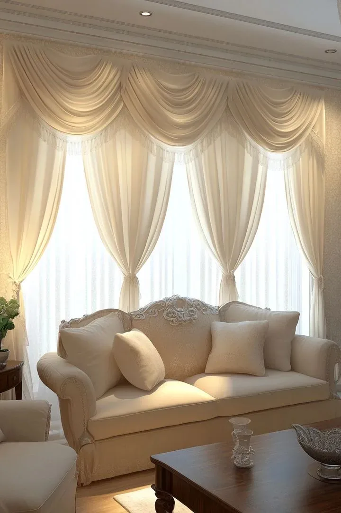
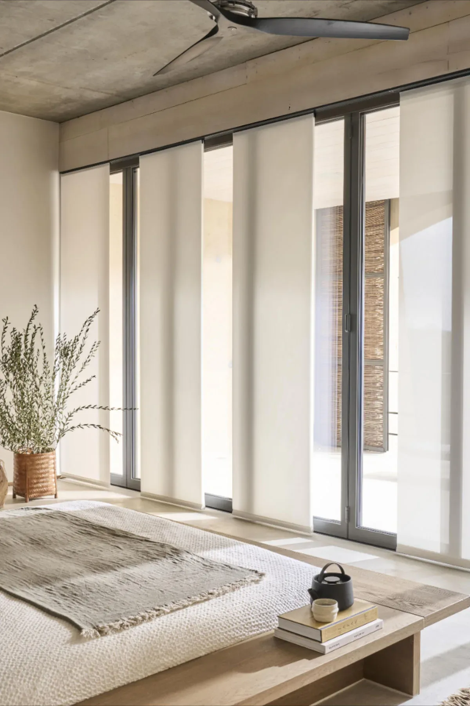
Процес пошиття, монтажі, нові колекції тканин і кадри з реальних квартир.
Вартість залежить від розміру вікна, типу конструкції, тканини, карниза та складності монтажу. Дизайнер приїде зі зразками й розрахує кошторис для ваших вікон.
Менеджер зв'яжеться з вами в робочий час, щоб узгодити дату виїзду.
Одне й те саме полотно на південному вікні та на північному виглядає як два різні матеріали. Пряме сонце висвітлює колір і проявляє фактуру, розсіяне північне світло робить відтінок глибшим і холоднішим. Тому дизайнер привозить відрізи додому: ви бачите тканину у власній кімнаті, поруч зі своїми стінами, підлогою й меблями — і вирішуєте вже не за фотографією на екрані.
Так само працює поверх. На нижніх поверхах щільність підбираємо передусім під приватність: удень вікно має лишатися закритим від вулиці, і тут потрібен щільніший тюль або друге полотно. Вище над міською забудовою обмежень менше — можна дозволити собі легшу тканину й більше денного світла.
Ціни на сайті ми свідомо не публікуємо: будь-яка цифра до заміру була б умовною й ні до чого вас не зобов'язувала б. Реальний кошторис складається з кількох величин, і кожна змінює суму відчутно:
Дизайнер рахує все це на місці й показує кошторис до початку робіт. Виїзд зі зразками в межах Києва безкоштовний і ні до чого не зобов'язує.
Більшість полотен переносять делікатне прання при 30 градусах без віджиму — вішати їх краще вологими просто на карниз, тоді складка розправляється сама. Оксамит і тканини з металевою ниткою віддають у хімчистку. Блекаут-підкладку не прасують гарячою праскою: покриття цього не любить. Точні рекомендації для конкретного артикула дизайнер лишає разом із виробом після монтажу.